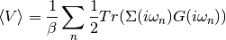

Energy formulas¶
Kinetic Energy¶
This energy is the weigthed average of non-interacting kinetic energy. Assuming a non-interacting Hamiltonian in momentum space the kinetic average is.
It can be transformed into a treatable form relying on local quantities

The first two terms can be summed in reciprocal space to yield a local the quantities that come out of the DMFT self-consistency and the last term as it belongs to the non-interacting system is trivially solvable
It is also possible to take a simpler approac by introducing a zero to the frequecy sum, with a constant factor. In this case one takes from
But the local self-energy can be expresed by
Where is the momentum independent part of the hamiltonian. Then the expression transforms into.
Potential energy¶
According to [Fetter-Walecka] in equation 23.14 then transformed to Matsubara frequencies the potential energy can be described by:
And expressing it in local quantities with the DMFT approximation that the Self-Energy is local
(1)¶
References¶
| [Fetter-Walecka] | Fetter, Walecka, Quantum Theory of many-particle systems |